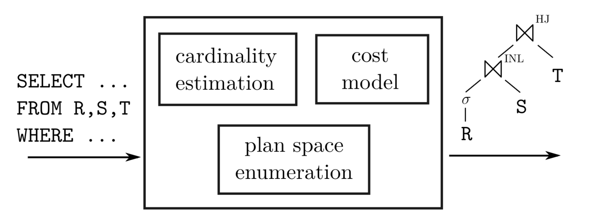
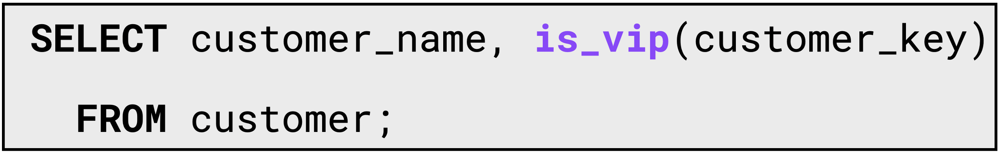
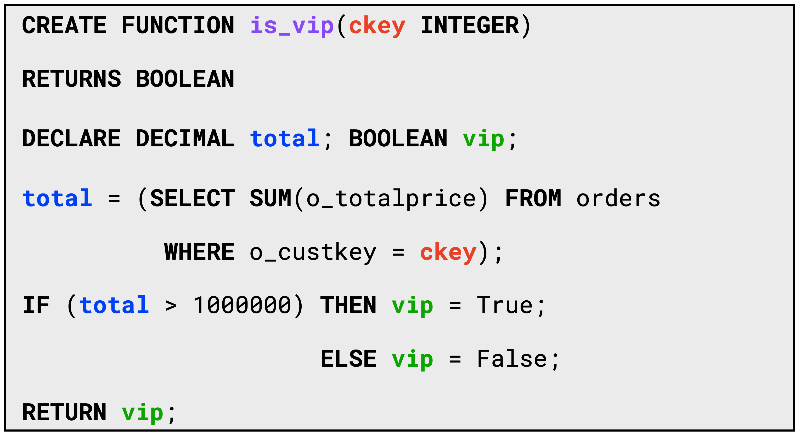
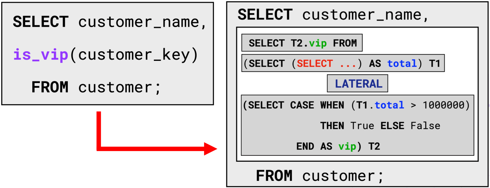
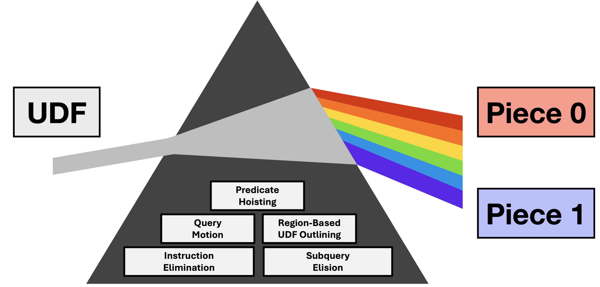
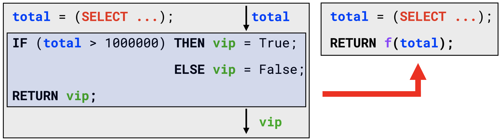
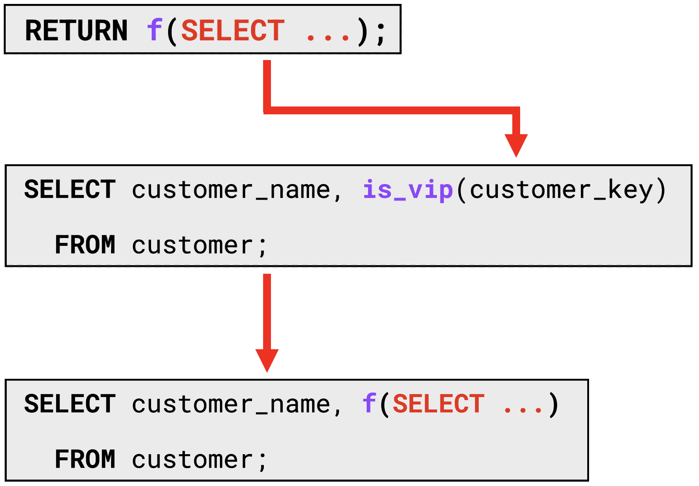
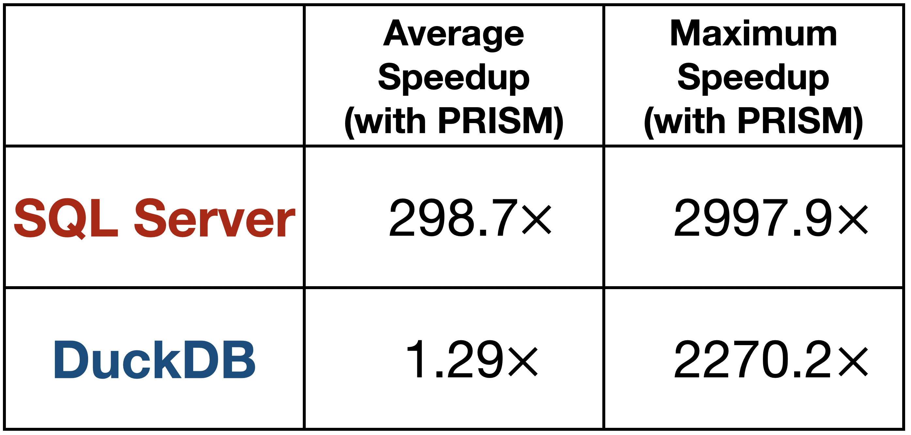

The Key to Effective UDF Optimization: Before Inlining, First Perform Outlining
Background
SQL is the de facto query language used to interact with databases. Since SQL is declarative, users express the intended result of their query rather than the concrete procedural steps to produce the answer. Database management systems (DBMSs) find fast execution strategies for SQL queries using a component called the query optimizer (shown in Figure 1). The optimizer’s task is to search the space of equivalent query plans (specific procedural strategies to retrieve the query result), estimate the number of rows produced by each operator (cardinalities), and select the plan with the lowest estimated runtime cost. After decades of research on query optimization, database systems have become remarkably effective at optimizing SQL queries.
Figure 1, The Query Optimizer: The query optimizer takes a SQL query (SELECT ...) as input and produces a query plan (shown on the right-hand side) as output. The query optimizer aims to select the query plan with the lowest estimated cost. It achieves this by enumerating the space of equivalent query plans (the plan space), estimating each operator's cardinalities, and estimating each candidate plan's runtime cost.
User-Defined Functions (UDFs)
Although most database queries are written purely in SQL, billions of queries per day make calls to User-Defined Functions (UDFs), procedural functions written in non-SQL programming languages such as Python or PL/SQL.
Figure 2, An example query invoking a PL/SQL UDF: The query computes for each customer, their name, and whether they are a VIP.
Figure 3, An Example UDF: An example UDF written in PL/SQL. The function is_vip takes a customer key as input and returns whether the customer is a VIP. A customer is a VIP if the total amount spent on their orders (computed using the SELECT statement) exceeds 1,000,000.
Figure 2 showcases an example query invoking a UDF (is_vip) from SQL, with Figure 3 providing the implementation of the is_vip UDF, which returns whether a customer is a VIP. The is_vip UDF mixes declarative code (the SELECT statement) and procedural code (IF/ELSE statements). Allowing users to mix procedural and declarative code provides a more convenient and intuitive way to express query logic than pure SQL. As a result, UDFs provide significant software engineering benefits to database users, namely the ability to reuse code, express query logic more concisely, and decompose complex queries into modular functions.
Row-By-Agonizing-Row (RBAR) Execution
Unfortunately, UDFs come with a performance cost. Unlike SQL, which is purely declarative, UDFs mix declarative and procedural programming paradigms. A DBMS’s query optimizer can effectively reason about SQL, but was never designed to optimize non-declarative UDF code. As a consequence, DBMS’s execute UDFs as opaque functions (much like built-in functions), evaluating them in a naive “row-by-row” fashion. In the process, SELECT statements embedded inside the UDF are re-evaluated for each row, dramatically slowing down query execution. Database practitioners have termed this naive, inefficient, row-by-row execution of UDFs as RBAR (Row-By-Agonizing-Row).
For the query shown in Figure 2, the DBMS naively evaluates the UDF for each input row of the customer table. Each UDF call executes an embedded SELECT statement that accesses the orders table. Without an available index on the orders table, the DBMS scans the entire table on each UDF invocation. Hence, the query’s runtime complexity is Θ(|customer| × |orders|), which is extremely inefficient. With an index, the DBMS can avoid rescanning the orders table, but each UDF still incurs significant overhead, resulting in degraded query runtime.
UDF Inlining: Intuition
Figure 4, UDF Inlining Intuition: The key intuition behind UDF inlining is to translate UDFs from procedural functions into SQL subqueries, a declarative representation that the DBMS can optimize effectively. In the above example, inlining replaces the is_vip UDF by an equivalent SQL subquery.
The DBMS employs RBAR execution of UDFs as they are written in a non-declarative paradigm that the query optimizer cannot effectively reason about. Such row-by-row execution is reminiscent of how database systems logically evaluate SQL subqueries, whereby the DBMS re-evaluates a subquery for each row of the calling query. The key distinction, however, between UDFs and subqueries is that the database community has spent decades optimizing subqueries. Hence, if the DBMS could translate a UDF into an equivalent SQL subquery, the query is left entirely in SQL, which is amenable to effective query optimization. Translating UDFs to equivalent SQL subqueries is known as UDF inlining, and enables the efficient execution of queries containing UDFs.
Subquery Unnesting

Figure 5, Subquery Unnesting: An illustration of how DBMSs perform subquery unnesting. The SQL query is rewritten from an inefficient query containing a subquery to an equivalent query containing joins that are significantly faster to execute.
UDF inlining avoids RBAR execution by translating UDFs into subqueries that the DBMS can unnest, replacing subqueries with equivalent join operators.
On the left-hand side of Figure 5 is a SQL query containing a subquery (shown in red). The naive way of evaluating the query is by re-evaluating the subquery for each row of the orders table and rescanning the customer table. Evaluating the query in this manner results in a runtime of Θ(|customer| × |orders|), which is highly inefficient. The right-hand side of Figure 5 illustrates the rewritten query after the DBMS performs subquery unnesting, efficiently evaluating the query in Θ(|customer| + |orders|) time with hash joins.
UDF Inlining: Further Details
Figure 6, UDF Inlining: An illustration of the UDF inlining technique for our motivating example. Inlining translates the is_vip UDF into an equivalent SQL subquery with LATERAL joins. The generated subquery is then "inlined" into the calling query. After inlining, the query is represented entirely in SQL, which the DBMS can optimize effectively.
UDF inlining translates UDFs into equivalent SQL subqueries in three key steps. First, inlining translates a UDF’s statements to SQL tables. IF/ELSE blocks become CASE WHEN statements, assignments (i.e., x = y) become projections (i.e., SELECT y AS x). Then, the DBMS chains together these statements with LATERAL joins. LATERAL joins are special joins which allow the joining tables to reference each other’s columns. After inserting LATERAL joins, the resulting SQL expression is equivalent to the original UDF. The last step is to “inline” the generated SQL expression into the calling query, eliminating the UDF call. After applying UDF inlining, queries are represented in pure SQL, automatically improving the performance of queries with UDFs by multiple orders of magnitude.
The Problem with UDF Inlining
Unfortunately, UDF inlining is ineffective for most real-world queries because it produces large, complex SQL queries that are hard to optimize. In particular, to achieve significant performance improvements with UDF inlining, the DBMS must unnest the generated subquery. Yet, UDF inlining produces complex subqueries containing LATERAL joins that most DBMSs fail to unnest. As a result, the DBMS evaluates the subquery naively for each row, akin to the RBAR execution strategy used before applying UDF inlining.

Figure 7, Subquery Unnesting (ProcBench): A table indicating whether a given DBMS (SQL Server or DuckDB) successfully unnested a UDF-centric query from the Microsoft SQL ProcBench. A green tick indicates that the unnesting succeeded. A grey cross indicates that the unnesting failed.
To understand how effectively DBMSs optimize queries with UDFs, we ran the Microsoft SQL ProcBench, a UDF-centric benchmark containing 15 queries modeled after real-world customer queries. We evaluated these queries on two DBMSs: Microsoft SQL Server and DuckDB. A query executes efficiently only if the DBMS can unnest the subquery generated by UDF inlining otherwise the DBMS evaluates it RBAR. SQL Server unnests only 4 out of 15 of the queries after inlining. Alternatively stated, SQL Server evaluates 11 out of 15 of the ProcBench queries RBAR, resulting in underwhelming performance. Hence, for most real-world UDF-centric queries, inlining is ineffective on SQL Server. Although DuckDB supports arbitrary unnesting of subqueries and achieves high performance on all 15 queries, only a handful of DBMSs implement arbitrary unnesting, and integrating the optimization into existing systems is highly challenging. Hence, for the majority of UDF-centric queries, inlining is ineffective for the vast majority of DBMSs (shown in Figure 8).
Our Solution: UDF Outlining
Fundamentally, we observe that inlining entire UDFs results in complex subqueries that are challenging for the DBMS to unnest. Instead of inlining entire UDFs, a better approach is to analyze the UDF, deconstruct it into smaller pieces, and inline only the pieces that help query optimization. To achieve this, we propose UDF outlining, an optimization technique that extracts UDF code fragments into separate functions that are intentionally not inlined, minimizing UDF code complexity. We implement UDF outlining in conjunction with four other complementary UDF-centric optimizations in PRISM, our optimizing compiler for UDFs (shown in Figure 9).
Figure 8, PRISM: PRISM is an optimizing compiler for UDFs, deconstructing a UDF into separate inlined and outlined pieces. By operating on UDF pieces, only the code helpful for query optimization is exposed to the DBMS, intentionally leaving the remaining code opaque through UDF outlining. PRISM is reminiscent of a prism of light, breaking a UDF down into its constituent pieces.
PRISM is an acronym for the five UDF-centric optimizations that it supports:
- Predicate Hoisting
- Region-Based UDF Outlining
- Instruction Elimination
- Subquery Elision
- Query Motion
To illustrate PRISM’s optimizations, we illustrate the changes that occur when applying the three relevant optimizations to our motivating example.
Region-Based UDF Outlining
The first and most critical optimization that PRISM performs is region-based UDF outlining. The goal of UDF outlining is to extract the largest blocks of unhelpful code for query optimization into separate functions that are opaque to the DBMS. PRISM achieves this by representing a UDF as a hierarchy of program regions, where each region is eligible for outlining. PRISM identifies the largest regions of UDF code that do not contain any SELECT statements and extracts each region into a separate outlined function. PRISM then compiles the outlined functions to machine code, preventing the inlining of the corresponding region. Lastly, PRISM replaces the region in the original UDF with an opaque function call into the outlined function, simplifying the UDF substantially.
Figure 9, Region-Based UDF Outlining: Instead of inlining the entire UDF, PRISM extracts the largest regions of non-SELECT code into separate outlined functions. In our example, PRISM extracts the IF/ELSE block and RETURN statement into an outlined function f(...), which is opaque to the query optimizer.
Figure 9 illustrates how PRISM applies region-based UDF outlining to our motivating example. First, PRISM identifies the region containing the IF/ELSE block and RETURN statement as the largest region not containing SELECT statements. Next, it extracts the region into a new outlined function f(…), compiles it to machine code, and replaces the original region with an opaque function call to the outlined function. Through UDF outlining, PRISM significantly simplifies the UDF, enabling more effective query optimization.
Instruction Elimination
PRISM then applies instruction elimination, eliminating as many redundant instructions in the UDF as possible. PRISM achieves this by replacing a variable’s uses with its definition, making the variable definition redundant. PRISM then deletes the definition. PRISM eliminates redundant instructions through instruction elimination, minimizing the number of LATERAL joins generated from inlining.
Figure 10, Instruction Elimination: After UDF outlining, PRISM applies instruction elimination to remove as many UDF instructions as possible, reducing the number of LATERAL joins from inlining. Instruction elimination replaces the uses of a variable with its definitions. In our example, PRISM eliminates the definition of total, directly forwarding its definition to the use by f(...).
Figure 10 showcases PRISM’s application of instruction elimination to our motivating example. PRISM identifies total as a program variable and replaces its use in f(…) with its definition. Since total no longer has any uses, PRISM eliminates its defining instruction, collapsing the UDF to a single RETURN statement.
Subquery Elision
Lastly, PRISM runs subquery elision to eliminate redundant subqueries from the resulting query. Inlining translates UDFs into subqueries, which complicates query optimization. However, PRISM elides the subquery when a UDF consists of a single RETURN statement (as is the case for our motivating example, shown in Figure 11). Instead, it directly substitutes the original UDF call with the return value. PRISM simplifies the UDF through its optimizations, oftentimes leaving the resulting query free of LATERAL joins, resulting in more effective query optimization and faster query plans.
Figure 11, Subquery Elision: In our example, PRISM reduces the UDF to a single RETURN statement after instruction elimination. When a UDF consists of a single RETURN statement, PRISM performs subquery elision and injects the return value into the calling query rather than substituting it as a SQL subquery.
Experimental Setup
We performed our evaluation on a machine with a dual-socket 20-core Intel Xeon Gold 5218R CPU (20 cores per CPU, 2× HT), 192 GB DDR4 RAM, and a 960 GB NVMe SSD. We use the default index configuration for all workloads and build additional column-store indexes on every table on SQL Server. For each DBMS, we tune their configuration knobs to improve performance, pre-warm the buffer pool, and refresh statistics. We perform two warmup runs of each query and then five hot runs (with minimal observed variance), reporting the average execution time of the five runs.
SQL ProcBench: Microsoft released the SQL ProcBench in 2021 as the first UDF-centric benchmark modeled after real-world UDFs on Azure SQL Server. ProcBench is based on the TPC-DS benchmark and contains 24 queries that invoke scalar UDFs. We use a scale factor of 10 (a database size of ≈10 GB). We run 15 of the 24 queries, ignoring queries that use table-valued functions (TVFs) or UDFs invoked from stored procedures.
Experiments: Unnesting

Figure 12, Subquery Unnesting (ProcBench): A table indicating whether a given DBMS (SQL Server or DuckDB) successfully unnested a UDF-centric query from the Microsoft SQL ProcBench with a given technique (inlining or PRISM). A green tick indicates that the unnesting succeeded. A grey cross indicates that the unnesting failed. Figure 12 and Figure 7 share the same values for the queries unnested with inlining.
The principle issue with UDF inlining is that it produces complex subqueries with LATERAL joins that most DBMSs cannot unnest, resulting in inefficient RBAR execution. By comparison, PRISM only exposes the UDF pieces that improve query optimization, resulting in significantly simpler and faster queries. As shown in Figure 12, SQL Server can unnest only 4 out of 15 of the ProcBench queries after applying UDF inlining. Yet with PRISM, SQL Server can unnest 12 of the 15 queries, leading to efficient query execution with joins rather than inefficient RBAR execution. As expected, DuckDB can unnest all 15 queries with both techniques, as it supports arbitrary unnesting of subqueries. In summary, PRISM significantly improves subquery unnesting compared to naively inlining the entire UDF.
Experiments: Overall Speedup
Figure 13, Aritmethic Mean Speedup (ProcBench): A table indicating the overall speedup on the Microsoft SQL ProcBench when running queries with PRISM over inlining the entire UDF. We calculate speedup by dividing the runtime of running a given query without PRISM (i.e., inlining the entire UDF) by the runtime with PRISM. We report the arithmetic mean speedup (excluding outliers) and the maximum speedup (including outliers). We observe that PRISM provides significant performance improvements over existing UDF optimization techniques.
Figure 13 details the arithmetic mean (average) and maximum speedup of the ProcBench queries when running PRISM. We observe that, on average, PRISM attains a speedup of 298.7× due to 8 of the 15 ProcBench queries now evaluating efficiently with joins after successful unnesting rather than RBAR. The maximum speedup for SQL Server is 2997.9×, again due to more effective unnesting, for a query that spends the entirety of its execution time in the UDF call. DuckDB can unnest arbitrary queries. Therefore, PRISM offers a more modest arithmetic mean speedup of 1.29× due to eliminating LATERAL joins from the query plan. Lastly, PRISM delivers a maximum speedup of 2270.2× on DuckDB, as the query after UDF inlining is so complex, that even after unnesting, the DBMS picks an inefficient query plan with a large cross-product. In contrast, the generated query is substantially simpler with PRISM, leading to an efficient plan evaluated with hash joins. PRISM significantly improves SQL Server and DuckDB compared to inlining entire UDFs by generating simpler queries that are easier to optimize.
Conclusion
The database community developed UDF inlining to translate entire UDFs to SQL for more effective query optimization. We observe that inlining entire UDFs leads to complex, obfuscated queries that are challenging for DBMSs to optimize effectively. Instead, we propose UDF outlining, a new technique that extracts regions of code irrelevant for query optimization into opaque functions intentionally hidden from the DBMS. In addition to UDF outlining, our optimizing compiler (PRISM) supports four other complementary UDF-centric optimizations. By generating simpler queries, we observe that on the Microsoft SQL ProcBench, PRISM provides dramatic performance improvements over inlining entire UDFs.
Our paper has been accepted for publication in VLDB 2025.